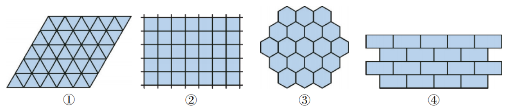
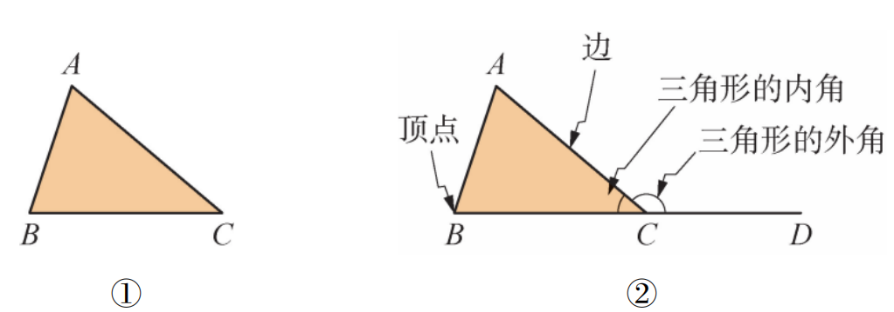
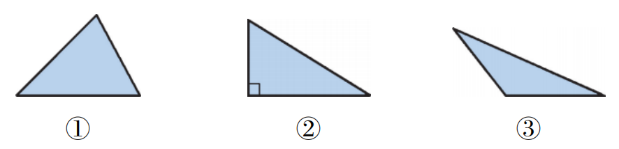
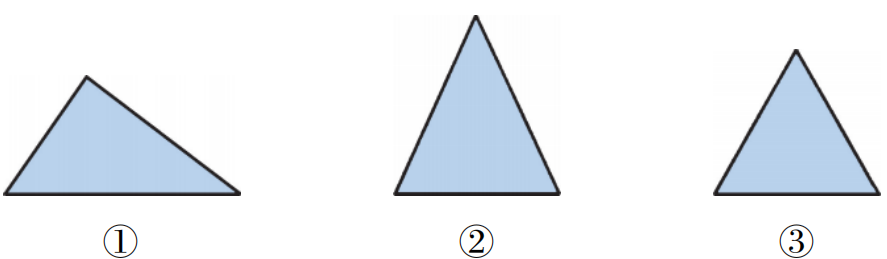
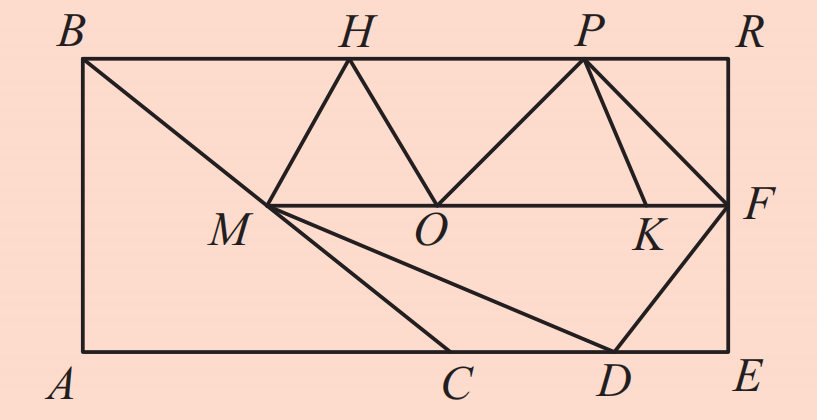
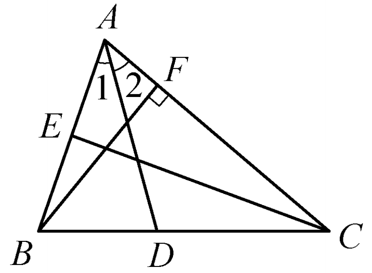
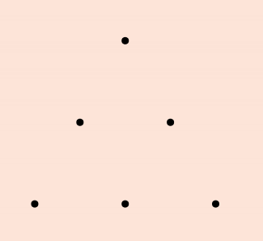

你观察过瓷砖的铺设吗？无论是正方形、正六边形还是其他形状，它们都能严丝合缝地铺满地面。三角形是最简单的多边形，研究三角形的性质，能帮助我们解开瓷砖铺满地面的奥秘。今天，我们先从认识三角形开始。

三角形的定义： 由三条不在同一条直线上的线段首尾顺次连结组成的平面图形叫做三角形。这三条线段就是三角形的边。
三角形的顶点用大写字母 $A, B, C$ 表示，整个三角形记作 $\triangle ABC$。
内角与外角： 每两条边所组成的角叫做三角形的内角（如 $\angle ACB$）；三角形中内角的一边与另一边的反向延长线所组成的角叫做三角形的外角（如 $\angle ACD$）。
$\triangle ABC$ 有多少个内角？多少个外角？与内角 $\angle A$ 相邻的外角有几个？它们是什么关系？怎样画出 $\triangle ABC$ 的外角？
三角形有3个内角，每个内角有2个外角（互为对顶角），所以共有6个外角。与 $\angle A$ 相邻的外角有2个，它们相等（对顶角）。画外角时，延长一边即可。

观察图8.1.3，三个三角形的内角各有什么特点？

第一个三角形三个角都是锐角 → 锐角三角形；第二个三角形有一个直角 → 直角三角形；第三个三角形有一个钝角 → 钝角三角形。
锐角三角形： 三个内角均为锐角；
直角三角形： 有一个内角是直角；
钝角三角形： 有一个内角是钝角。
观察图8.1.4，三个三角形的边各有什么特点？

第一个三角形三边互不相等 → 不等边三角形；第二个三角形有两条边相等 → 等腰三角形；第三个三角形三边都相等 → 等边三角形（正三角形）。
等边三角形是等腰三角形吗？
是。等边三角形是特殊的等腰三角形（腰和底相等）。
在图8.1.5中找出等腰三角形、正三角形、锐角三角形、直角三角形和钝角三角形。

等腰三角形：至少有两条边相等；
正三角形：三条边都相等；
锐角三角形：三个角都是锐角；
直角三角形：有一个角是直角；
钝角三角形：有一个角是钝角。
请根据以上定义，对照图8.1.5找出相应的三角形。
在练习本上画出： (1)等腰锐角三角形； (2)等腰直角三角形； (3)等腰钝角三角形。
三角形的中线： 连结顶点和对边中点的线段。
三角形的角平分线： 一个内角的平分线与对边相交，顶点到交点的线段。
三角形的高： 从顶点向对边（或延长线）作垂线，顶点到垂足的线段。
显然，三角形有三条中线、三条角平分线和三条高。

在三个相同的锐角三角形中分别画出三条中线、三条角平分线和三条高。换成直角三角形或钝角三角形再试试，你发现了什么？
三角形的三条中线、三条角平分线、三条高（或所在的直线）分别交于一点。直角三角形三条高的交点就是直角顶点；钝角三角形有两条高位于三角形的外部。
1. 在练习本上画出： (1)等腰锐角三角形； (2)等腰直角三角形； (3)等腰钝角三角形。
2. 6个点如图所示那样放置，相邻两点的距离相等，把这些点作为三角形的顶点，可以画多少个正三角形？

可以画5个正三角形。
3. 如图，△ABC是等腰三角形，AB=AC，试画出边BC上的中线和高以及∠A的平分线，从中你发现了什么？
等腰三角形底边上的中线、高和顶角平分线互相重合（三线合一）。
4. 在一个直角三角形中，画出斜边上的中线，观察图形中有几个等腰三角形？再用刻度尺验证。
斜边上的中线把直角三角形分成两个等腰三角形（直角三角形斜边上的中线等于斜边的一半）。
如果三角形的三条边固定，那么三角形的形状和大小就完全确定了，这个性质叫做三角形的稳定性。四边形不具有稳定性。生活中，起重机、钢架桥等都利用了三角形的稳定性。
分类思想： 按角和边对三角形进行分类。
数形结合： 通过画图理解中线、角平分线、高的概念。
归纳推理： 从特殊三角形发现一般规律。
✨ 三角形是最稳定的结构，也是几何大厦的基石 ✨